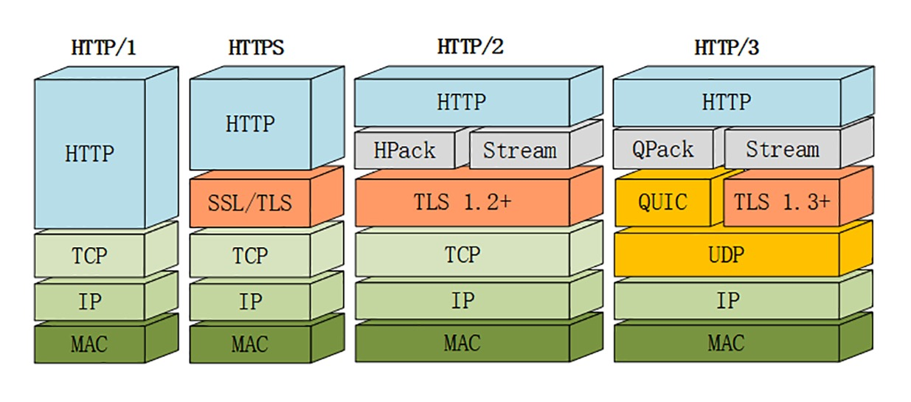

背景
大家都知道计算机最开始发明出来是为了解决计算问题的，从上世纪80年代开始，开始进入PC时代，微软、IBM、苹果等公司，推出了图形用户界面的个人计算机。欧洲核子研究中心（CERN）的一名软件工程师–蒂姆·伯纳斯-李注意到，不同科学家之间很难共享信息，不同的电脑储存了不同的信息，科学家要想获取指定信息只能登陆到对应的电脑才能完成。1989年，蒂姆·伯纳斯 - 李写了一份关于建立一个通过网络传输超文本系统的报告。这个系统起初被命名为 Mesh，在随后的1990年项目实施期间被更名为万维网（World Wide Web）。同时在这一年，我们的英雄“HTTP”诞生了，从此开始了它伟大的征途。本文从协议历史的角度讲一讲HTTP协议的连接管理是如何不断优化的。
HTTP/0.9&1.0
20 世纪 90 年代初期的互联网世界非常简陋，计算机处理能力低，存储容量小，网速很慢，网络上绝大多数的资源都是纯文本，很多通信协议也都使用纯文本，所以HTTP的设计也非常简单，文档都是只读的，只允许用“GET”动作从服务器上获取 HTML 文档，并且在响应请求之后立即关闭连接，功能非常有限。虽然简单，但这种"请求-响应"的模型充分验证了web服务器的可行性，也蕴含了进化和扩展的可能性。这一时期的 HTTP 被定义为 0.9 版。
HTTP/1.0 版本在 1996 年正式发布。它在多方面增强了 0.9 版，形式上已经和我们现在的 HTTP 差别不大了，比如增加了 HEAD、POST 等新方法，增加了响应状态码等。
无论是0.9还是1.0，它底层的数据传输基于 TCP/IP，每次发送请求前需要先与服务器建立连接，收到响应报文后会立即关闭连接。因为客户端与服务器的整个连接过程很短暂，不会与服务器保持长时间的连接状态，所以就被称为“短连接”（short-lived connections）。早期的 HTTP 协议也被称为是“无连接”的协议。
短连接的缺点相当严重，因为在 TCP 协议里，建立连接和关闭连接都是非常“昂贵”的操作。TCP 建立连接要有“三次握手”，发送 3 个数据包，需要 1 个 RTT；关闭连接是“四次挥手”，4 个数据包需要 2 个 RTT。
HTTP/1.1
针对短连接暴露出的缺点，HTTP/1.1 协议就提出了“长连接”的通信方式，既然 TCP 的连接和关闭非常耗时间，那么就把这个时间成本由原来的一个“请求 - 应答”均摊到多个“请求 - 应答”上。
由于长连接对性能的改善效果非常显著，所以在 HTTP/1.1 中的连接都会默认启用长连接。不需要用什么特殊的头字段指定，只要向服务器发送了第一次请求，后续的请求都会重复利用第一次打开的 TCP 连接，也就是长连接，在这个连接上收发数据。
不过长连接也有一些小缺点，问题就出在它的“长”字上。因为 TCP 连接长时间不关闭，服务器必须在内存里保存它的状态，这就占用了服务器的资源。如果有大量的空闲长连接只连不发，就会很快耗尽服务器的资源，导致服务器无法为真正有需要的用户提供服务。所以，长连接也需要在恰当的时间关闭，不能永远保持与服务器的连接，这在客户端或者服务器都可以做到。
在客户端，可以在请求头里加上“Connection: close”字段，告诉服务器：“这次通信后就关闭连接”。服务器看到这个字段，就知道客户端要主动关闭连接，于是在响应报文里也加上这个字段，发送之后就调用 Socket API 关闭 TCP 连接。
客户端和服务器都可以在报文里附加通用头字段“Keep-Alive: timeout=value”，限定长连接的超时时间。
HTTP的队头阻塞及其优化
因为 HTTP 规定报文必须是“一发一收”，这就形成了一个先进先出的“串行”队列。队列里的请求没有轻重缓急的优先级，只有入队的先后顺序，排在最前面的请求被最优先处理。
如果队首的请求因为处理的太慢耽误了时间，那么队列里后面的所有请求也不得不跟着一起等待，结果就是其他的请求承担了不应有的时间成本。
既然队首可能存在阻塞，那么我多排几个队不就好一点了么，浏览器和服务器多建立几个连接，阻塞了也只影响哪一个连接的后续的请求，其他连接还是不耽误。这在 HTTP 里就是“并发连接”（concurrent connections），也就是同时对一个域名发起多个长连接，用数量来解决质量的问题。
但这种方式也存在缺陷。如果每个客户端都想自己快，建立很多个连接，用户数×并发数就会是个天文数字。服务器的资源根本就扛不住，或者被服务器认为是恶意攻击，反而会造成“拒绝服务”。
所以，HTTP 协议建议客户端使用并发，但不能“滥用”并发。RFC2616 里明确限制客户端一个域名最多并发 2 个连接。不过实践证明这个数字实在是太小了，众多浏览器都“无视”标准，把这个上限提高到了 6~8。后来修订的 RFC7230 也就“顺水推舟”，取消了这个“2”的限制。
Chrome浏览器是6个连接，假如一个域名有30个请求，那么把这30个请求都加入请求队列，前6个请求先使用6个tcp连接，谁先返回结果，就从队列中取出一个，继续使用空闲的连接。假设某一个请求一直阻塞，那其他的连接还可以继续使用。
但“并发连接”所压榨出的性能也跟不上高速发展的互联网无止境的需求，于是又有让人想到，机仍然一个域名最多只能建立6个连接，那我是不是可以多设置几个域名，而这些域名都指向同一台服务器，这样实际长连接的数量就又上去了，真是“美滋滋”。不过实在是有点“上有政策，下有对策”的味道。这个就是“域名分片”（domain sharding）技术，还是用数量来解决质量的思路。
同理，前端的一些优化手段，比如雪碧图、css和js内联、多个静态资源合并成一个文件等，都是用到减少HTTP请求的原理来优化速度。
HTTP/2
虽然HTTP/1.1使用各种手段来优化，但是并没有解决问题只能暂缓问题。所以HTTP/2直接从报文格式进行改造，不再使用肉眼可见的 ASCII 码，而是向下层的 TCP/IP 协议“靠拢”，全面采用二进制格式。
这样虽然对人不友好，但却大大方便了计算机的解析。原来使用纯文本的时候容易出现多义性，比如大小写、空白字符、回车换行、多字少字等等，程序在处理时必须用复杂的状态机，效率低，还麻烦。
而二进制里只有“0”和“1”，可以严格规定字段大小、顺序、标志位等格式，“对就是对，错就是错”，解析起来没有歧义，实现简单，而且体积小、速度快，做到“内部提效”。
它把 TCP 协议的部分特性挪到了应用层，把原来的“Header+Body”的消息“打散”为数个小片的二进制“帧”（Frame），用“HEADERS”帧存放头数据、“DATA”帧存放实体数据。使用“化整为零”的思路，数据分帧后“Header+Body”的报文结构就完全消失了，协议看到的只是一个个的“碎片”。
HTTP/2 为此定义了一个“流”（Stream）的概念，它是二进制帧的双向传输序列，同一个消息往返的帧会分配一个唯一的流 ID。你可以想象把它成是一个虚拟的“数据流”，在里面流动的是一串有先后顺序的数据帧，这些数据帧按照次序组装起来就是 HTTP/1 里的请求报文和响应报文。
因为“流”是虚拟的，实际上并不存在，所以 HTTP/2 就可以在一个 TCP 连接上用“流”同时发送多个“碎片化”的消息，这就是常说的“多路复用”（ Multiplexing）——多个往返通信都复用一个连接来处理。
在“流”的层面上看，消息是一些有序的“帧”序列，而在“连接”的层面上看，消息却是乱序收发的“帧”。多个请求 / 响应之间没有了顺序关系，不需要排队等待，也就不会再出现“队头阻塞”问题，降低了延迟，大幅度提高了连接的利用率。
为了更好地利用连接，加大吞吐量，HTTP/2 还添加了一些控制帧来管理虚拟的“流”，实现了优先级和流量控制，这些特性也和 TCP 协议非常相似。
HTTP/2 还在一定程度上改变了传统的“请求 - 应答”工作模式，服务器不再是完全被动地响应请求，也可以新建“流”主动向客户端发送消息。比如，在浏览器刚请求 HTML 的时候就提前把可能会用到的 JS、CSS 文件发给客户端，减少等待的延迟，这被称为“服务器推送”（Server Push，也叫 Cache Push）。
与 HTTP/1“并发多个连接”不同，HTTP/2 的“多路复用”特性要求对一个域名（或者 IP）只用一个 TCP 连接，所有的数据都在这一个连接上传输，这样不仅节约了客户端、服务器和网络的资源，还可以把带宽跑满，让 TCP 充分“吃饱”。“多路复用”则让 TCP 开足了马力，“全速狂奔”，多个请求响应并发，每时每刻上下行方向上都有流在传输数据，没有空闲的时候，带宽的利用率能够接近 100%。所以，HTTP/2 只使用一个连接，就能抵得过 HTTP/1 里的五六个连接。
HTTP/3
HTTP/2 虽然使用“帧”“流”“多路复用”，没有了“队头阻塞”，但这些手段都是在应用层里，而在下层，也就是 TCP 协议里，还是会发生“队头阻塞”。
从协议栈的角度来仔细看一下。在 HTTP/2 把多个“请求 - 响应”分解成流，交给 TCP 后，TCP 会再拆成更小的包依次发送（其实在 TCP 里应该叫 segment，也就是“段”）。
在网络良好的情况下，包可以很快送达目的地。但如果网络质量比较差，像手机上网的时候，就有可能会丢包。而 TCP 为了保证可靠传输，有个特别的“丢包重传”机制，丢失的包必须要等待重新传输确认，其他的包即使已经收到了，也只能放在缓冲区里，上层的应用拿不出来，只能“干着急”。
举个简单的例子：
客户端用 TCP 发送了三个包，但服务器所在的操作系统只收到了后两个包，第一个包丢了。那么内核里的 TCP 协议栈就只能把已经收到的包暂存起来，“停下”等着客户端重传那个丢失的包，这样就又出现了“队头阻塞”。
由于这种“队头阻塞”是 TCP 协议固有的，所以 HTTP/2 即使设计出再多的“花样”也无法解决。
Google 在推 SPDY 的时候就已经意识到了这个问题，于是就又发明了一个新的“QUIC”协议，让 HTTP 跑在 QUIC 上而不是 TCP 上。
而这个“HTTP over QUIC”就是 HTTP 协议的下一个大版本，HTTP/3。它在 HTTP/2 的基础上又实现了质的飞跃，真正“完美”地解决了“队头阻塞”问题。

从这张图里，你可以看到 HTTP/3 有一个关键的改变，那就是它把下层的 TCP“抽掉”了，换成了 UDP。因为 UDP 是无序的，包之间没有依赖关系，所以就从根本上解决了“队头阻塞”。UDP 是一个简单、不可靠的传输协议，只是对 IP 协议的一层很薄的包装，和 TCP 相比，它实际应用的较少。
不过正是因为它简单，不需要建连和断连，通信成本低，也就非常灵活、高效，“可塑性”很强。
所以，QUIC 就选定了 UDP，在它之上把 TCP 的那一套连接管理、拥塞窗口、流量控制等“搬”了过来，“去其糟粕，取其精华”，打造出了一个全新的可靠传输协议，可以认为是“新时代的 TCP”。QUIC 基于 UDP，而 UDP 是“无连接”的，根本就不需要“握手”和“挥手”，所以天生就要比 TCP 快。
总结
从以上的历史，可以得到一些启示：
- 不要一味的批评，要看历史原因。HTTP协议的某些特性或者说缺点，其实是由于当时的环境现状影响的，当时的设计在当时并没有什么问题，但随着时间的迁移，需求的改变，慢慢的就不合时宜了。我们需要了解到当时的情况才能更加深入的理解。
- 不要过度设计。每一个阶段解决一个阶段的事情，后面的事情慢慢在解决。我们的系统设计也一样，不要一开始就定个高目标，要抗住多少流量，多少并发，先简单做，真的到了撑不住的时候，公司业务也发展的很好了，有钱有人还怕重构么？
- 找到出现问题的原因，从根本上解决问题。我们很多网站优化小技巧，其实都只是缓解一下问题，并不能解决问题，真正解决问题还是要想的深入一点。
为了更好地体验，HTTP协议的设计人员也是呕心沥血，为他们致敬。同时也要感谢蒂姆·伯纳斯 - 李无私的奉献，他坚持让HTTP协议保持免费和开放，如果他要收取许可费，那早就是亿万富贵了。在2012年的奥运会开幕式，他在电脑前打出"This is for Everyone"。
以上内容整理自极客时间的《透视HTTP协议》，如果需要深入研究可以自行购买：
 支付宝打赏
支付宝打赏
 微信打赏
微信打赏
赞赏一下